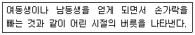
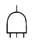
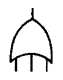
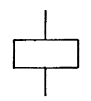
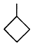
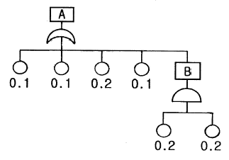

산업안전산업기사 (2008-07-27 기출문제)
1과목: 산업안전관리론
1. A 사업장의 연간근로시간수가 110만시간이고, 이 기간 중 재해가 12건 발생하여 120일의 근로손실이 발생하였다면 이 사업장의 도수율은 약 얼마인가?
- 0.11
- 1.11
- 10.91
- 109
(정답률: 60%)

2. 다음 중 무재해 운동의 이념 3원칙과 거리가 먼 것은?
- 무의 원칙
- 상황의 원칙
- 참가의 원칙
- 선취 해결의 원칙
(정답률: 80%)
3. 다음 중 하인리히의 사고연쇄반응이론(도미노 이론)에서 사고를 가져오기 바로 직전의 단계에 해당하는 것은?
- 유전적 요소
- 개인적 결함
- 사회적 환경
- 불안전한 행동 및 상태
(정답률: 83%)
4. 허즈버그(Herzberg)의 동기ㆍ위생이론 중에서 위생요인에 해당하지 않는 것은?
- 보수
- 책임감
- 작업조건
- 관리감독
(정답률: 68%)
5. 다음 중 S-R 이론에 대한 설명으로 가장 적절한 것은?
- 학습을 자극에 의한 반응으로 보는 이론
- 학습은 자극에 의한 무반응의 강도
- 학습은 유전과 환경사이의 반응
- 학습과 학습자료에 관한 이론
(정답률: 75%)
6. 안전교육 훈련의 기법 중 하버드 학파의 5단계 교수법을 순서대로 나열한 것은?
- 총괄 → 연합 → 준비 → 교시 → 응용
- 준비 → 교시 → 연합 → 총괄 → 응용
- 교시 → 준비 → 연합 → 응용 → 총괄
- 응용 → 준비 → 연합 → 교시 → 총괄
(정답률: 79%)
7. 안전교육의 방법 중 프로그램 학습법(programmed self - instruction method)에 관한 설명으로 틀린 것은?
- 개발비가 적게 들어 쉽게 적용할 수 있다.
- 수업의 모든 단계에서 적용이 가능하다.
- 한 번 개발된 프로그램 자료는 개조하기 어렵다.
- 수강자들이 학습이 가능한 시간대의 폭이 넓다.
(정답률: 69%)
8. 어느 공장의 연간 재해율을 조사한 결과 도수율이 120이고, 강도율이 1.2 일 때 이 공장의 재해 1건당 근로손실일수는 얼마인가?
- 0.01
- 1
- 10
- 100
(정답률: 17%)
9. 다음 중 위험예지훈련 기초 4R(라운드) 기법에서 2R(라운드)에 해당되는 내용은?
- 사실을 파악한다.
- 요인을 찾아낸다.
- 행동계획을 정한다.
- 대책을 선정한다.
(정답률: 67%)
10. 다음 중 리더십에 대한 설명으로 틀린 것은?
- 조직원에 의하여 선출된다.
- 지휘의 형태는 민주주의적이다.
- 조직원과의 사회적 간격이 넓다.
- 권한의 근거는 개인의 능력에 의한다.
(정답률: 74%)
11. 다음 중 기억과정에 있어 “파지(retention)”에 대한 설명으로 가장 적절한 것은?(오류 신고가 접수된 문제입니다. 반드시 정답과 해설을 확인하시기 바랍니다.)
- 사물의 인상을 마음속에 간직하는 것
- 사물의 보존된 인상을 다시 의식으로 떠오르는 것
- 과거의 경험이 어떤 형태로 미래의 행동에 영향을 주는 작용
- 과거의 학습 경험을 통하여 학습된 행동이나 내용이 지속되는 것
(정답률: 58%)
12. 안전교육의 방법 중 TWI(Trainning Within Industry for supervisor)의 교육내용에 해당하지 않는 것은?
- 작업지도기법(JIT)
- 작업개선기법(JMT)
- 인간관계 관리기법(JRT)
- 작업환경 개선기법(JET)
(정답률: 61%)
13. 재해의 발생 형태 분류 중 사람이 평면상으로 넘어졌을 경우를 무엇이라고 하는가?
- 추락
- 충돌
- 전도
- 협착
(정답률: 68%)
14. 다음 중 안전ㆍ보건표지의 색채와 사용 사례가 올바르게 연결된 것은?
- 녹색 - 특정행위의 지시 및 사실의 고지
- 빨강 - 화학물질 취급장소에서의 유해ㆍ위험 경고
- 노랑 - 소화설비 및 그 장소
- 파랑 - 사람 또는 차량의 통행표지
(정답률: 70%)
15. 작업 중 걱정, 고민, 욕구불만 등에 의하여 정신을 빼앗기는 것에 해당되는 것은?
- 의식의 과잉
- 의식의 중단
- 의식의 우회
- 위식수준의 저하
(정답률: 75%)
16. 다음은 스트레스에 대한 반응 중 무엇에 해당하는가?

- 투사
- 억압
- 승화
- 퇴행
(정답률: 82%)
17. 다음 중 재해 발생의 원인별 분류시 물적 원인으로 볼 수 없는 것은?(오류 신고가 접수된 문제입니다. 반드시 정답과 해설을 확인하시기 바랍니다.)
- 불안전한 설계
- 방호장치의 불충분
- 주변 환기의 부족
- 안전장치의 제거
(정답률: 29%)
18. 버드(Frank Bird)의 도미노 이론을 올바르게 나열한 것은?
- 기본원인 → 제어의 부족 → 직접원인 → 사고 → 상해
- 기본원인 → 직접원인 → 제어의 부족 → 사고 → 상해
- 제어의 부족 → 기본원인 → 직접원인 → 사고 → 상해
- 제어의 부족 → 직접원인 → 기본원인 → 상해 → 사고
(정답률: 52%)
19. 매슬로우(Maslow)의 욕구 5단계 이론 중 2단계의 욕구에 해당하는 것은?
- 안전 욕구
- 사회적 욕구
- 존경의 욕구
- 자아 실현의 욕구
(정답률: 77%)
20. 다음 중 형식교육에 있어 교육의 3요소로 볼 수 없는 것은?
- 주체
- 객체
- 매개체
- 일정
(정답률: 83%)
2과목: 인간공학 및 시스템안전공학
21. 다음 중 시스템의 신뢰도를 증가시키는 방법으로 볼 수 없는 것은?
- 부품의 개선
- Fail safe 설계
- 중복 설계
- 기능 우선의 복잡한 설계
(정답률: 80%)
22. 다음 중 자극반응시간(reaction time)이 가장 빠른 감각은?
- 시각
- 청각
- 촉각
- 통각
(정답률: 44%)
23. 다음 중 산업안전보건법에 따라 상시 작업에 종사하는 장소에서 보통작업을 하고자 할 때 작업면의 최소 조도(Lux)로 옳은 것은? (단, 작업장은 일반적인 작업장소이며, 감광재료를 취급하지 않는 장소이다.)
- 75
- 150
- 300
- 750
(정답률: 53%)
24. 제어장치의 레버를 2cm 이동시켰더니 표시장치의 지침이 8cm 이동하였다. 이 계기의 통제표시비(C/D)는 얼마인가?
- 0.15
- 0.25
- 0.35
- 0.45
(정답률: 77%)
25. 다음 중 소음을 측정하는 기본 단위에 해당하는 것은?
- 지멘스(S)
- 데시벨(dB)
- 루멘(lumen)
- 거스트(Gust)
(정답률: 82%)
26. 다음 중 직렬 구조를 갖는 시스템의 특성으로 틀린 것은?
- 요소(要素) 중 어느 하나가 고장이면 시스템은 고장이다.
- 요소의 수가 적을수록 시스템의 신뢰도는 높아진다.
- 요소의 수가 많을수록 시스템의 수명은 짧아진다.
- 시스템의 수명은 요소 중에서 수명이 가장 긴 것으로 정해진다.
(정답률: 68%)
27. 다음 중 시스템의 수명곡선에서 초기 고장 기간의 고장 형태로 옳은 것은?
- 감소형
- 증가형
- 일정형
- 왕복형
(정답률: 58%)
28. 출력되는 값을 정확히 읽어야 하는 경우에 가장 적합한 시각적 표시장치의 형태는?
- 동침형
- 동목형
- 수직형
- 계수형
(정답률: 74%)
29. 다음 시스템의 안전해석 기법 중 인간의 과오(Human error)를 정량적으로 평가할 수 있는 기법은?
- THERP
- PHA
- FMEA
- MORT
(정답률: 74%)
30. FTA 도표에 사용되는 논리기호 중 “AND GATE"에 해당하는 것은?




(정답률: 80%)
31. 다음 중 인간이 현존하는 기계를 능가하는 기능은?
- 예기치 못한 사건들을 감지한다.
- 반복적인 작업을 신뢰성 있게 수행한다.
- 암호화된 정보를 신속하게 대량으로 보관한다.
- 입력신호에 대해 신속하고 일관성 있는 반응을 한다.
(정답률: 78%)
32. 프레스공장에서 모든 방향으로 빛을 발하는 점광원에서 2m 떨어진 곳의 조도가 500Lux 였다면, 4m 떨어진 곳에서의 조도는 몇 Lux 인가?
- 50
- 100
- 125
- 250
(정답률: 61%)
33. 화학설비에 대한 안전성 평가 중 정량적 평가의 항목이 아닌 것은?
- 온도
- 공정
- 취급 물질
- 화학설비의 용량
(정답률: 53%)
34. 다음 중 조종장치를 촉각적으로 식별하기 위하여 암호화 할 때 사용하는 방법으로 볼 수 없는 것은?
- 형상을 이용한 암호화
- 표면 촉감을 이용한 암호화
- 크기를 이용한 암호화
- 전기적 자극을 이용한 암호화
(정답률: 55%)
35. 다음과 같은 FT도에서 정상사상 “A"의 발생 확률은 약 얼마인가? (단, 원 아래의 수치는 각 사상에 대한 발생확률이다.)

- 0.04
- 0.44
- 0.63
- 0.99
(정답률: 53%)
36. 인체 측정치의 응용원칙에서 최대치를 적용하여 반영하는 경우가 아닌 것은?
- 선반의 높이
- 출입문의 크기
- 버스내 승객용 좌석간의 거리
- 와이어로프의 사용 중량
(정답률: 67%)
37. 다음 중 인간의 오류모형에 있어서 상황 해석을 잘못하거나 목표를 이해하고 착각하여 행하는 경우를 무엇이라 하는가?
- 착오(MIstake)
- 실수(Slip)
- 건망증(Lapse)
- 위반(Violation)
(정답률: 75%)
38. 다음 중 소음에 의한 청력손실이 가장 크게 나타나는 주파수(Hz)는?
- 1000
- 2000
- 4000
- 8000
(정답률: 70%)
39. 다음 중 산업안전보건법상 안전ㆍ보건표지의 종류와 색채가 올바르게 연결된 것은?
- 고온경고 : 바탕은 파란색, 관련 그림은 흰색
- 세안장치 : 바탕은 흰색, 기본 모형 및 관련 부호는 녹색
- 금연 : 바탕은 노랑, 기본 모형ㆍ관련 부호 및 그림은 검정
- 응급구호표지 : 바탕은 흰색, 기본 모형은 빨간색, 관련 부호 및 그림은 검정색
(정답률: 50%)
40. 수리하여 사용이 가능한 시스템에서 고장과 고장사이의 정상적인 상태로 동작하는 평균시간을 무엇이라 하는가?
- MDT
- MTBF
- MTTR
- MTBR
(정답률: 44%)
3과목: 기계위험방지기술
41. 연삭숫돌의 바깥지름이 300 mm라면, 평형 플랜지의 바깥지름은 몇 mm 이상이어야 하는가?
- 100 mm
- 150 mm
- 200 mm
- 250 mm
(정답률: 68%)
42. 산업안전기준에 관한 규칙 중 연삭기 안전 대책에서 연삭 숫돌의 시운전에 관한 설명으로 옳은 것은?
- 작업시간 전 2분 이상 시운전 한다.
- 작업시간 전 3분 이상 시운전 한다.
- 연삭숫돌의 교체시 3분 이상 시운전 한다.
- 연삭숫돌의 교체시 5분 이상 시운전 한다.
(정답률: 80%)
43. 선반에서 절삭 중 핍을 자동적으로 끊어 주는 바이트에 설치된 안전장치는?
- 커버
- 방진구
- 보안경
- 칩 브레이커
(정답률: 78%)
44. 프레스기에서 슬라이드 행정길이가 몇 mm 이상일 때 손쳐내기식 방호장치를 사용해야 하는가?
- 10 mm
- 20 mm
- 40 mm
- 80 mm
(정답률: 56%)
45. 보일러에서 압력제한 스위치의 역할은?
- 최고 사용압력과 상용압력 사이에서 보일러의 버너 연소를 차단
- 최고 사용압력과 상용압력 사이에서 급수펌프 작동을 제한
- 최고 사용압력 도달시 과열된 공기를 대기에 방출하여 압력 조절
- 위험압력시 버너, 급수펌프 및 고저 수위조절 장치 등을 통제하여 일정압력 유지
(정답률: 54%)
46. 하역운반기계인 컨베이어의 종류로 거리가 먼 것은?
- 벨트 컨베이어
- 체인 컨베이어
- 롤러 컨베이어
- 풀리 컨베이어
(정답률: 53%)
47. 양중이의 와이어로프의 안전계수는 얼마 이상으로 해야 하나? (단, 화물의 하중을 직접 지지하는 경우)
- 5.0 이상
- 7.0 이상
- 9.0 이상
- 11.0 이상
(정답률: 72%)
48. 피복금속 아크용접 작업시 생기는 결함에 대한 설명 중 틀린 것은?
- 스패터(spatter):용융된 금속의 작은 입자가 튀어나와 모재에 묻어있는 것
- 언더컷(under cut):용접된 경계부근에 Arc로 인해서 움푹파여 들어가 흠이 생긴 것
- 크레이터(crater):용착금속 속에 남아있는 가스로 인한 구멍
- 오버랩(overlap):용융된 금속이 모재와 잘 용융되지 않고 표면에 덮혀있는 상태
(정답률: 56%)
49. 보일러의 압력방출장치가 2개 이상 설치된 경우, 최고사용 압력 이하에서 1개가 작동되고, 다른 압력방출장치는 얼마에서 작동되도록 부착하여야 하는가?
- 최고사용압력 1.⑤배 이하
- 최고사용압력 1.1배 이하
- 최고사용압력 1.25배 이하
- 최고사용압력 1.5배 이하
(정답률: 73%)
50. 안전계수 5인 체인의 최대 설계응력이 1kN 이라면 이 체인의 극한 강도는 얼마인가?
- 5 kN
- 6 kN
- 10 kN
- 12 kN
(정답률: 77%)
51. 다음 중 근로자에게 위험을 미칠 우려가 있는 공작기계에서 덮개, 울 등을 설치해야 하는 경우와 가장 거리가 먼 것은?
- 연삭기 또는 평삭기의 테이블, 형삭기 램 등의 행정 끝
- 선반으로부터 돌출하여 회전하고 있는 가공물 부근
- 톱날 접촉예방장치가 설치된 원형톱(목재가공용 둥근 톱 기계 제외) 기계의 위험부위
- 띠톱기계의 위험한 톱날(절단부분 제외)부위
(정답률: 50%)
52. 산업안전기준에 관한 규칙에서 회전시험을 할 때, 미리 비파괴검사를 실시해야 하는 고속회전체는?
- 회전축의 중량이 1톤을 초과하고, 원주속도가 25m/s 이상인 것
- 회전축의 중량이 5톤을 초과하고, 원주속도가 25m/s 이상인 것
- 회전축의 중량이 1톤을 초과하고, 원주속도가 120m/s 이상인 것
- 회전축의 중량이 5톤을 초과하고, 원주속도가 120m/s 이상인 것
(정답률: 66%)
53. 로울러의 맞물림점의 전방 60mm의 거리에 가드를 설치하고자 할 때 가드 개구부의 간격은 얼마인가? (단, 위험점이 전동체가 아닌 경우임)
- 12mm
- 15mm
- 18mm
- 20mm
(정답률: 63%)
54. 급정지기구가 있는 안전 1행정 프레스에서 광전자식 방호장치에서 광선에 신체의 일부가 감지된 후로부터 급정지 기구의 작동시까지의 시간이 40ms 이고, 급정지 기구의 작동 직후로부터 프레스기가 정지될 때까지의 시간이 20ms 라면 안전거리는 몇 mm 이상이어야 하나?
- 65mm
- 76mm
- 85mm
- 96mm
(정답률: 58%)
55. 목재가공용 둥근톱에 설치해야 하는 분할날의 두께는?
- 톱날 두께의 1.1배 이상이고, 톱날의 치진폭 이하이어야 한다.
- 톱날 두께의 1.1배 이상이고, 톱날의 치진폭 이상이어야 한다.
- 톱날 두께의 1.1배 이내이고, 톱날의 치진폭 이상이어야 한다.
- 톱날 두께의 1.1배 이내이고, 톱날의 치진폭 이하이어야 한다.
(정답률: 59%)
56. 사업주가 작업장의 출입구(비상구 제외)를 설치할 때, 준수사항이 아닌 것은?
- 출입구의 위치, 수 및 크기가 작업장의 용도와 특성에 적합할 것
- 근로자가 임의로 열고 닫을 수 없도록 할 것
- 주목적이 하역운반기계용인 출입구에는 인접하여 보행자용 출입구를 따로 설치할 것
- 하역운반기계의 통로와 인접하여 있는 출입구에서 접촉에 의하여 근로자에게 위험을 미칠 우려가 있는 때에는 경보장치를 할 것
(정답률: 69%)
57. 산업용 로봇에 접근하여 위험이 발생될 우려에 대비해서, 사용되는 방호장치로 적합하지 않은 것은?
- 안전방책
- 초음파 센서
- 안전매트
- 안전블록
(정답률: 49%)
58. 동력을 사용하여 중량물을 매달아 상하 및 좌우(수평 또는 선회를 말한다.)로 운반하는 것을 목적으로 하는 기계는?
- 크레인
- 리프트
- 곤돌라
- 승강기
(정답률: 72%)
59. 용기(Bombe)의 도색으로 연결이 잘못된 것은?
- 산소 - 청색
- 아세틸렌 - 황색
- 액화석유가스 - 회색
- 수소 - 주황색
(정답률: 58%)
60. 산업용 로봇의 교시 등의 작업 수행시 불의의 작동 또는 잘못된 조작에 따른 위험을 방지하기 위한 조치사항으로 거리가 먼 것은?
- 작업 중 로봇의 작동 상태를 수시로 확인하기 위하여 주변에 방책 등을 설치해서는 안된다.
- 이상을 발견할 때의 조치에 대한 지침을 정하고, 그에 따라 작업을 하도록 한다.
- 작업 중에는 담당자 이외의 자가 로봇의 가동 스위치를 조작할 수 없도록 필요한 조치를 한다.
- 로봇의 조작 방법 및 순서에 관한 지침을 정하고, 그에 따라 작업을 하도록 한다.
(정답률: 78%)
4과목: 전기 및 화학설비위험방지기술
61. 전기설비에서 제1종 접지공사는 접지저항을 몇 Ω 이하로 해야 하는가?
- 5
- 10
- 50
- 100
(정답률: 65%)
62. 방폭구조 중 전폐구조를 하고 있으며, 외부의 폭발성 가스가 내부로 침입하여 내부에서 폭발하더라도 용기는 그 압력에 견디고, 내부의 폭발로 인하여 외부의 폭발성 가스에 착화될 우려가 없도록 만들어진 구조는?
- 안전증방폭구조
- 본질안전방폭구조
- 유입방폭구조
- 내압방폭구조
(정답률: 69%)
63. A 가스의 폭발하한계가 4.1vol%, 폭발상한계가 62vol% 일 때 이 가스의 위험도는 약 얼마인가?
- 8.94
- 12.75
- 14.12
- 16.12
(정답률: 55%)
64. 다음 중 폭발위험장소의 분류가 0종인 장소에서 사용할 수 있는 방폭구조는?
- 안전증방폭구조
- 내압방폭구조
- 유입방폭구조
- 본질안전방폭구조
(정답률: 50%)
65. 다음 중 증기운폭발에 대한 설명으로 틀린 것은?
- 대기 중에 대향의 가연성 가스 및 기화하기 쉬운 가연성액체가 누출되어 발화원에 의해 발생한다.
- 증기운폭발은 일종의 가스폭발이다.
- 증기운폭발은 주로 폐쇄공간에서 발생한다.
- LNG가 누출될 때에도 증기운폭발을 할 수 있다.
(정답률: 47%)
66. 다음 중 화재의 종류와 그 화재급수가 올바르게 연결된 것은?
- 목재에 의한 화재 - A급 화재
- 전기에 의한 화재 - D급 화재
- 유류에 의한 화재 - C급 화재
- 금속에 의한 화재 - B급 화재
(정답률: 69%)
67. 다음 중 액체계의 과도한 상승 압력의 방출에 이용되고, 설정압력이 되었을 때 압력상승에 비례하여 개방정도가 커지는 밸브는?
- 릴리프밸브
- 체크밸브
- 안전밸브
- 통기밸브
(정답률: 62%)
68. 휘발유를 저장하던 이동저장탱크에 등유나 경유를 이동저장탱크의 밑부분으로부터 주입할 때에 액표면이 주입관의 정상부분을 넘는 높이가 될 때까지 그 주입배관내의 유속은 몇 m/s 이하로 하여야 하는가?
- 0.5
- 1.0
- 1.5
- 2.0
(정답률: 71%)
69. 다음 중 이산화탄소 및 할로겐화물 소화기의 소화약제에 대한 특징으로 틀린 것은?
- 소화속도가 빠르다.
- 장기간 저장이 가능하다.
- 주로 냉각효과에 의한 소화방식이다.
- 전기절연성이 커서 전기기계류의 화재에 사용된다.
(정답률: 63%)
70. 다음 중 전압을 구분하는데 있어 고압에 해당하는 것은?(2021년 개정된 KEC 규정 적용됨)
- 직류 500V
- 직류 1000V
- 교류 5000V
- 교류 7000V
(정답률: 58%)
71. 부피조성이 메탄 65%, 에탄 20%, 프로판 15% 인 혼합 가스의 공기 중 폭발하한계는 몇 vol% 인가? (단, 메탄, 에탄, 프로판의 폭발하한계는 각각 5.0vol%, 3.0vol%, 2.1vol% 이다.)
- 2.63
- 3.73
- 4.83
- 5.93
(정답률: 63%)
72. 다음 중 연소의 3요소가 아닌 것은?
- 연쇄반응
- 점화원
- 산소공급원
- 가연물
(정답률: 70%)
73. 다음 중 정전기 발생의 방지대책이 아닌 것은?
- 설비에 대전 방지제를 사용한다.
- 설비 주위의 공기를 가습한다.
- 배관내 액체의 유속을 제한한다.
- 설비의 주변에 자외선을 조사한다.
(정답률: 73%)
74. 기계ㆍ기구의 철대 및 외함의 접지공사 종별이 옳게 연결된 것은?
- 400V 미만인 저압용의 것 - 제1종 접지공사
- 400V 이상의 저압용의 것 - 제2종 접지공사
- 고압용의 것 - 제3종 접지공사
- 특별고압용의 것 - 제1종 접지공사
(정답률: 32%)
75. 산업안전보건법상 대지전압이 150V를 초과하는 이동형의 전기기계ㆍ기구로 정격전부하전류가 25A 인 것에 접속 되어야 하는 누전차단기의 작동시간으로 옳은 것은?
- 0.01초 이내
- 0.03초 이내
- 0.⑤초 이내
- 0.1초 이내
(정답률: 70%)
76. 초석이라고도 부르기도 하며, 흑색화약의 주원료로 사용 되는 산화성 물질로 환기가 좋은 냉암소에 보관해야 할 물질은?
- 질산칼륨
- 질산나트륨
- 질산암모늄
- 과염소산나트륨
(정답률: 44%)
77. 감전사고시 인체에 영향을 주는 심실세동전류와 통전시간의 관계를 올바르게 설명한 것은?
- 심실세동전류는 통전시간의 제곱근에 반비례한다.
- 심실세동전류는 통전시간의 제곱에 비례한다.
- 심실세동전류는 통전시간의 정비례한다.
- 심실세동전류는 통전시간의 세제곱에 비례한다.
(정답률: 47%)
78. 다음 중 고체물질의 연소 종류가 아닌 것은?
- 표면연소
- 증발연소
- 자기연소
- 확산연소
(정답률: 57%)
79. 다음 중 글로우 코로나(Glow Corona)에 대한 설명으로 틀린 것은?
- 전압이 2000V 정도에 도달하면 코로나가 발생하는 전극의 끝단에 자색의 광점이 나타난다.
- 회로에 예민한 전류계가 삽입되어 있으면, 수 μA정도의 전류가 흐르는 것을 감지할 수 있다.
- 전압을 상승시키면 전류도 점차로 증가하여 스파크 방전에 의해 전극간이 교락된다.
- GlowCorona는 습도에 의하여 큰 영향을 받는다.
(정답률: 52%)
80. 다음 중 산업안전보건법에 따라 위험물질의 종류를 분류할 때 잘못 분류한 것은?
- 폭발한계농도의 하한이 20%이며, 상한과 하한의 차가 10%인 가스는 가연성 가스이다.
- 대기압에서 인화점이 45℃ 인 가연성 액체는 인화성 물질이다.
- 농도가 25% 인 황산은 부식성 물질이다.
- 쥐에 대한 경구투여 실험시 LD50 이 100mg/kg인 물질은 독성 물질이다.
(정답률: 28%)
5과목: 건설안전기술
81. 강관비계의 1스팬(span)에 걸리는 최대 적재하중은 몇 kg을 초과하지 않아야 하는가?
- 200kg
- 300kg
- 400kg
- 500kg
(정답률: 56%)
82. 건설현장 전기재해 중 간접접촉에 대한 방지대책이 아닌 것은?
- 보호절연
- 안전전압 이하의 전기기기 사용
- 보호접지
- 충전부에 방호망 또는 절연덮개 설치
(정답률: 50%)
83. 옹벽의 안정조건에서 활동에 대한 저항력은 옹벽에 작용하는 수평력보다 최소 몇 배 이상 되어야 하는가?
- 1.0배
- 1.5배
- 2.0배
- 3.0배
(정답률: 62%)
84. 터널 건설작업의 터널 내부에서 화기나 아크를 사용하는 경우 필히 설치하도록 법으로 규정하고 있는 설비는?
- 대피설비
- 소화설비
- 충전설비
- 차단설비
(정답률: 71%)
85. 건설공사현장의 가설공사에 사용되는 비계발판에서의 발판폭 치수 기준으로 옳은 것은?
- 30cm 이상
- 40cm 이상
- 50cm 이상
- 60cm 이상
(정답률: 63%)
86. 해체 공사시 안전사항 준수내용으로 옳지 않은 것은?
- 사용기계기구 등을 인양하거나 내릴 때에는 와이어 로프로 묶어서 작업한다.
- 적정한 위치에 대피소를 설치하여야 한다.
- 전도작업을 수행할 때에는 작업자 이외의 작업자를 대피시킨 후 전도시키도록 한다.
- 강풍, 폭우, 폭설 등 악천후에는 작업을 중지한다.
(정답률: 60%)
87. 건설업 산업안전보건관리비의 추락방지용 안전시설비 항목에 속하지 않는 것은?
- 추락방지용 안전방망
- 작업발판
- 개구부 덮개
- 안전난간
(정답률: 50%)
88. 건설업 중 유해ㆍ위험방지계획서 제출대상 사업 규모에 해당되지 않는 것은?
- 터널건설 공사
- 깊이가 15미터인 굴착공사
- 지상높이가 25미터인 굴착공사
- 최대지간길이가 55미터인 교량건설 공사
(정답률: 58%)
89. 다음 중 흙에 과한 전단시험의 종류가 아닌 것은?
- 직접전단시험
- 일축압축시험
- 삼축압축시험
- CBR시험
(정답률: 59%)
90. 통나무 비계를 설치할 때 첫 번째 띠장을 설치할 높이는 지상으로부터 얼마 이하인가?
- 2미터 이하
- 3미터 이하
- 4미터 이하
- 5미터 이하
(정답률: 25%)
91. 암석 낙하의 우려가 있을 때 견고한 헤드가드를 설치해야 하는 건설기계의 종류가 아닌 것은?
- 불도저
- 트랙터
- 드래그쇼벨
- 스크레이퍼
(정답률: 45%)
92. 붕괴 등에 의한 위험방지에 관한 기준으로 틀린 것은?
- 인근의 항타 작업으로 침하가 발생하여 구축물의 붕괴 위험이 예상될 경우 안전성평가를 실시한다.
- 갱내에서의 측벽의 붕괴에 의하여 근로자에게 위험을 미칠 우려가 있을 때에는 지보공을 설치한다.
- 높이가 2미터 이상인 장소로부터 물체를 투하하는 때에는 투하설비를 설치하거나 감시인을 배치한다.
- 작업으로 인하여 물체가 낙하 또는 비래할 위험이 있을 때에는 방호선반의 설치 등 필요한 조치를 취한다.
(정답률: 54%)
93. 다음 보기 중 철골공사를 중지하여야 하는 경우에 해당하는 것은?
- 풍속이 6m/sec인 경우
- 풍속이 9m/sec인 경우
- 강우량이 0.5mm/hr인 경우
- 강우량이 1.3mm/hr인 경우
(정답률: 71%)
94. 부두, 안벽 등 하역작업을 하는 장소에 대하여 부두 또는 안벽의 선을 따라 통보를 설치할 때 통로의 최소 폭은?
- 70cm
- 80cm
- 90cm
- 100cm
(정답률: 60%)
95. 다음 중 거푸집 조립순서를 옳게 나열한 것은?
- 기둥 → 보받이 내력벽 → 큰보 → 작은보 → 바닥판 → 내벽 → 외벽
- 외벽 → 보받이 내력벽 → 큰보 → 작은보 → 바닥판 → 내벽 → 기둥
- 기둥 → 보받이 내력벽 → 작은보 → 큰보 → 바닥판 → 내벽 → 외벽
- 기둥 → 보받이 내력벽 → 바닥판 → 큰보 → 작은보 → 내벽 → 외벽
(정답률: 58%)
96. 사다리 기둥 설치시 기둥과 지면 사이에 유지해야 하는 각도는 최대 몇 도 이하이어야 하는가?
- 60° 이하
- 65° 이하
- 70° 이하
- 75° 이하
(정답률: 47%)
97. 재해사고를 예방하기 위해 크레인에 설치된 방호장치가 아닌 것은?
- 과부하 방지장치
- 브레이크장치
- 권과방지장치
- 버킷장치
(정답률: 63%)
98. 옹벽 축조를 위한 굴착작업에 대한 다음 설명 중 옳지 않은 것은?
- 수평 방향으로 연속적으로 시공한다.
- 하나의 구간을 굴착하면 방치하지 말고 즉시 붕괴방지 조치를 취한다.
- 낙석의 우려가 있는 절취취경사면에 숏크리트, 모르타르 등으로 방호 한다.
- 작업 위치의 좌우에 대피 통로를 확보한다.
(정답률: 69%)
99. 콘크리트 양생작업에 대한 다음 설명 중 가장 부적당한 것은?
- 콘크리트 타설 후 수화작용을 돕기 위한 작업이다.
- 급격한 건조 밀 한랭에 대해 보호한다.
- 일광을 최대한 도입하여 수화작용을 촉진하도록 한다.
- 보통포틀랜드 시멘트를 사용했을 경우 일평균기온이 15℃이상이면 최소 5일간 습윤상태를 유지한다.
(정답률: 50%)
100. 다음 중 철골보 인양작업시의 준수사항으로 옳지 않은 것은?
- 인양용 와이어로프의 체결지점은 수평부재의 1/4지점을 기준으로 한다.
- 인양용 와이어로프의 매달기 각도는 양변 60°를 기준으로 한다.
- 흔들리거나 선회하지 않도록 유도 로프로 유도한다.
- 후크는 용접의 경우 용접규격을 반드시 확인한다.
(정답률: 66%)
110만시간 / 근로자 수 = 근로자 1인당 연간 근로시간
재해로 인한 근로손실일수는 120일이므로,
재해로 인한 근로손실일수 / (근로자 1인당 연간 근로시간 x 365일) x 100 = 도수율
따라서, 도수율은 다음과 같이 계산할 수 있다.
120일 / (110만시간 / 근로자 수 x 365일) x 100 = 10.91
따라서, 정답은 10.91이다.